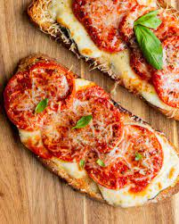

Pizza Toast Recipe

Pizza toast with mozarella and tomatoes
Here is my German families secret recipe for sausage and potato soup. This is great for cold winter lunches or even dinner, with a delicious side of rye bread.
Ingredients
- sausage
- potatoes
- cheese
- chicken broth
- red chili powder
Steps
- Cut up your sausage and potatoes, and fry your sausage alone. Set aside sausage when done.
- Put potatoes, chicken broth and and red chili powder into large pot and bring to a boil, then simmer for 15 minutes
- Add in cheese and sausage once potatoes are soft.
- Put in bowls and eat.